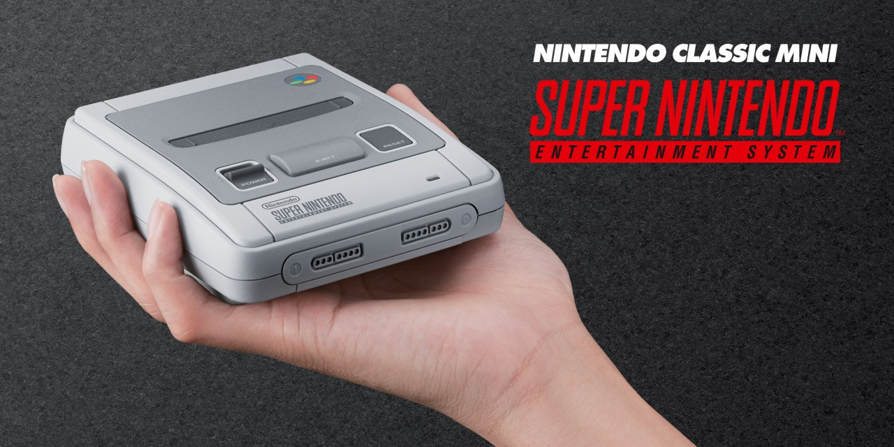

Vuelve la edad de oro de los juegos de 16 bits
Nintendo Classic Mini: Super Nintendo Entertainment System tiene el mismo aspecto que la consola original de los 90, pero más pequeña. ¡Además, esta viene con 21 juegos!
Unos mandos auténticamente noventeros
La consola incluye dos mandos retro de Super NES que van unidos a la consola por cable.
¡Más 20 juegos clásicos de SNES!
Hazte con algunos de los mejores juegos para uno y dos jugadores de la época, incluidos Super Mario Kart y Donkey Kong Country.
¿Qué contiene la caja?
Nintendo Classic Mini: Super Nintendo Entertainment System ,Dos mandos clásicos Super NES, Cable HDMI, Cable de alimentación USB, 21 juegos preinstalados